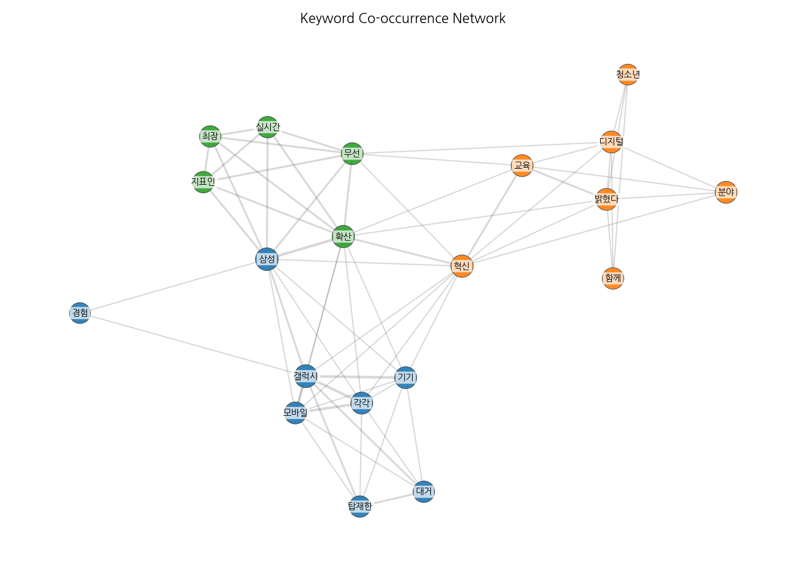
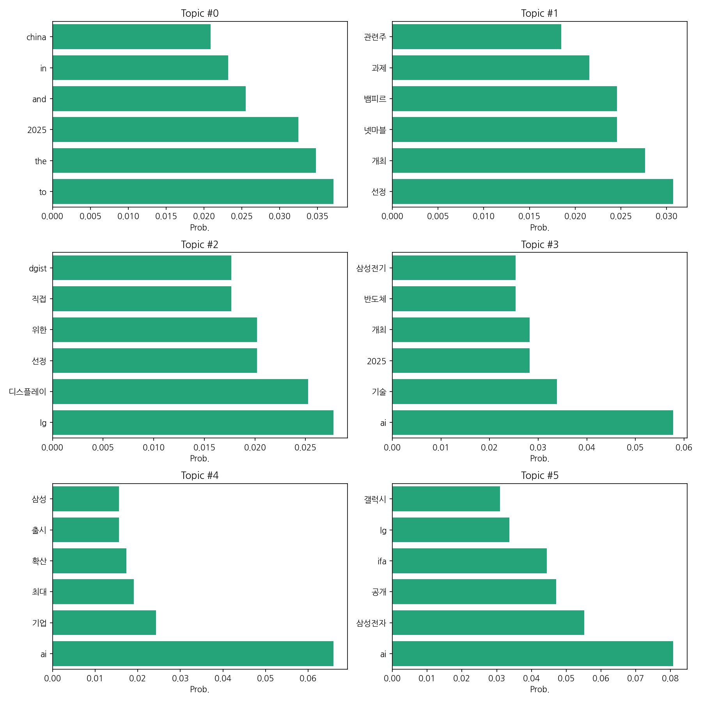
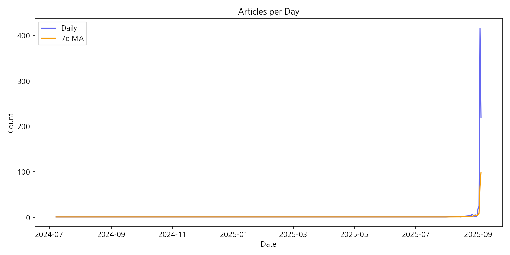

이번 기간 핵심 토픽과 키워드, 주요 시사점을 요약합니다.
핵심 맥락: 제공된 데이터는 2024년부터 2025년 9월 초까지의 한국 뉴스 기사 토픽을 분석한 결과입니다. 주요 토픽은 중국 관련 뉴스(topic 0), 게임 및 관련 산업(topic 1), 디스플레이 기술 및 LG 관련 뉴스(topic 2), AI 및 반도체 기술(topic 3), 그리고 AI 기업 및 인재 확보(topic 4)로 요약됩니다. 이는 한국 경제의 주요 성장 동력 및 미래 전략과 밀접하게 관련된 이슈들을 반영하고 있습니다.
최근 변화/스파이크: 2025년 9월 초(9월 3일)에 기사 수가 급증하는 스파이크 현상이 나타났습니다. 이는 특정 이벤트 또는 뉴스 발생으로 인한 집중적인 보도를 시사하며, 해당 시점 이전까지는 상대적으로 기사 수가 적었던 점을 고려할 때 주목할 만한 변화입니다.
실무 인사이트:
긴급 상황 대응 매뉴얼 준비: 2025년 9월 초의 기사 급증 사례를 바탕으로, 향후 예상치 못한 뉴스 발생에 대한 긴급 상황 대응 매뉴얼을 마련하고, 실시간 모니터링 시스템을 구축하여 신속한 대처가 가능하도록 합니다. 특히, 주요 키워드(AI, 반도체, 중국, LG, 게임 등)를 중심으로 모니터링을 강화해야 합니다.
| Rank | Keyword | Score |
|---|---|---|
| 1 | 디스플레 | 3.676 |
| 2 | 제품 | 2.757 |
| 3 | 혁신 | 2.465 |
| 4 | 분야 | 2.417 |
| 5 | 무선 | 2.227 |
| 6 | 삼성 | 2.192 |
| 7 | 청소년 | 1.984 |
| 8 | 디지털 | 1.943 |
| 9 | 교육 | 1.882 |
| 10 | 갤럭시 | 1.878 |
| 11 | 대거 | 1.84 |
| 12 | 함께 | 1.836 |
| 13 | 소개 | 1.789 |
| 14 | 기기 | 1.711 |
| 15 | 최장 | 1.704 |



핵심 맥락: 제공된 데이터는 2024년부터 2025년 9월 초까지의 한국 뉴스 기사 토픽을 분석한 결과입니다. 주요 토픽은 중국 관련 뉴스(topic 0), 게임 및 관련 산업(topic 1), 디스플레이 기술 및 LG 관련 뉴스(topic 2), AI 및 반도체 기술(topic 3), 그리고 AI 기업 및 인재 확보(topic 4)로 요약됩니다. 이는 한국 경제의 주요 성장 동력 및 미래 전략과 밀접하게 관련된 이슈들을 반영하고 있습니다.
최근 변화/스파이크: 2025년 9월 초(9월 3일)에 기사 수가 급증하는 스파이크 현상이 나타났습니다. 이는 특정 이벤트 또는 뉴스 발생으로 인한 집중적인 보도를 시사하며, 해당 시점 이전까지는 상대적으로 기사 수가 적었던 점을 고려할 때 주목할 만한 변화입니다.
실무 인사이트:
긴급 상황 대응 매뉴얼 준비: 2025년 9월 초의 기사 급증 사례를 바탕으로, 향후 예상치 못한 뉴스 발생에 대한 긴급 상황 대응 매뉴얼을 마련하고, 실시간 모니터링 시스템을 구축하여 신속한 대처가 가능하도록 합니다. 특히, 주요 키워드(AI, 반도체, 중국, LG, 게임 등)를 중심으로 모니터링을 강화해야 합니다.
| Idea | Target | Value Prop | Score |
|---|---|---|---|
| 2025년 9월 초 뉴스 기사 급증 예측 및 분석 플랫폼 | 대기업 홍보/PR팀, 시장조사 기관, 금융투자사 리서치팀 | AI 기반 실시간 뉴스 분석 기술을 통해 2025년 9월 초와 같은 뉴스 기사 급증 현상을 예측하고, 원인을 분석하여 신속한 의사결정을 지원합니다. 경쟁사 대비 빠른 속도와 정확도를 제공하며, 특정 이벤트에 대한 심층 분석을 제공합니다. | 3.8 |
| 2025년 9월 초 뉴스 기사 급증 예측 및 대응 시스템 | 대기업 홍보/PR팀, 위기관리팀, 시장조사 기관 | 본 시스템은 AI 기반 실시간 뉴스 분석을 통해 2025년 9월 초와 같은 뉴스 기사 급증 현상을 사전에 예측하고, 잠재적 위험 요인과 기회 요인을 분석하여 신속한 대응 전략 수립을 지원합니다. 경쟁 시스템 대비 빠른 속도와 정확도를 제공하며, 다양한 시각화 도구를 통해 직관적인 이해를 돕습니다. 특히, 주요 이슈에 대한 심층 분석 보고서를 제공하여 효율적인 의사결정을 지원합니다. | 3.8 |
| 2025년 9월 초 뉴스 기사 급증 예측 및 대응 플랫폼 | 대기업 홍보/위기관리팀, 시장조사 기관, 금융투자사 리서치팀 | 본 플랫폼은 AI 기반 예측 모델을 통해 2025년 9월 초 뉴스 기사 급증 현상을 사전에 예측하고, 잠재적 위험 요인과 기회를 분석하여 실시간으로 대응 전략을 수립할 수 있도록 지원합니다. 경쟁 플랫폼과 달리, 다양한 데이터 소스를 통합 분석하여 정확도를 높이고, 맞춤형 대응 전략을 제공합니다. 또한, 사후 분석 기능을 통해 예측 정확도를 지속적으로 개선합니다. | 3.8 |
| AI 기반 뉴스 기사 급증 예측 및 위기 관리 시스템 | 대기업 홍보/위기관리팀, IR팀, 시장조사 기관 | AI 기반 실시간 뉴스 분석을 통해 잠재적 위기 상황을 조기에 예측하고, 신속한 대응 전략 수립을 지원합니다. 기존 시스템보다 정확도와 속도를 높여 위기 발생에 따른 피해를 최소화하고, 효율적인 위기 관리를 가능하게 합니다. 특히 급증하는 뉴스 기사량에 대한 실시간 분석 및 예측 기능을 제공하여 선제적 대응을 지원하는 것이 차별점입니다. | 3.8 |
| 2025년 9월 초 뉴스 기사 급증 현상 분석 및 예측 서비스 | 대기업 홍보/PR팀, 시장조사 기관, 투자사 리서치팀 | AI 기반 뉴스 기사 분석 및 예측 서비스를 통해 2025년 9월 초와 같은 급증 현상의 원인을 정확히 분석하고, 미래 예측을 제공합니다. 다양한 데이터 소스를 통합 분석하여 정확도를 높이고, 시각화된 보고서를 통해 직관적인 이해를 돕습니다. 경쟁 서비스 대비 빠른 속도와 정확한 예측으로 의사결정을 지원합니다. | 3.5 |